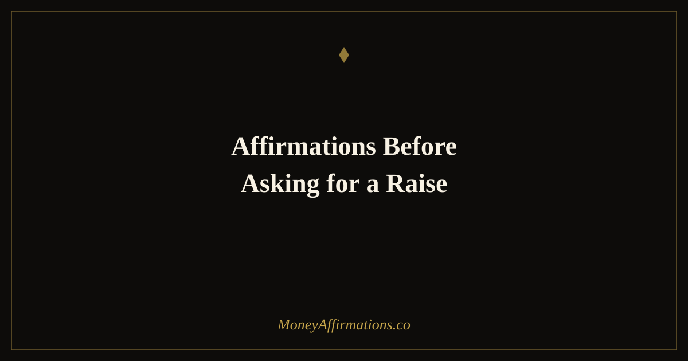

50 Affirmations Before Asking for a Raise to Own Your Worth

Most people spend more time dreading the raise conversation than preparing for it. The anxiety builds for days — maybe weeks — and by the time you finally sit down across from your manager, you are so focused on managing your fear of rejection that your actual case for the raise barely lands. You leave the room having said something much smaller than you meant to say, accepting a number you did not agree with, or putting it off for another quarter.
Affirmations before asking for a raise do not replace preparation — they make your preparation usable. When you genuinely believe you are worth what you are asking for, the conversation changes completely. Your voice steadies. Your reasoning comes through clearly. And when the negotiation pushes back, you hold your ground instead of collapsing. These 50 affirmations work through the specific emotional stages of the raise conversation, from the first whisper of fear all the way to whatever the outcome turns out to be.
What are raise affirmations?
Raise affirmations are statements you use to build the internal conviction to advocate for your own compensation. They are not motivational slogans — they are direct, first-person claims about your value, your preparation, and your right to ask for fair pay. They work by dismantling the specific cognitive blocks that make the raise conversation so hard: the fear of rejection, the discomfort around naming a number, and the unconscious belief that wanting more is somehow inappropriate.
Unlike generic confidence affirmations, raise-specific affirmations target the negotiation mindset directly. They address loss aversion — the fear that asking will damage your relationship with your employer. They reinforce your market value as an objective fact, not a feeling. And they train you to separate the outcome of the conversation from your sense of self-worth, which is the single most important skill in any negotiation.
50 affirmations before asking for a raise
The hardest part of asking for a raise is not the conversation — it is the week of anxiety leading up to it. Work through each group in the days before your meeting, not just on the day itself.
For the fear of being told no
- I am willing to hear no, because asking is always worth it.
- A no today does not mean a no forever — it opens a door to a better conversation.
- My relationship with my employer is strong enough to survive an honest ask.
- Rejection is information, not a verdict on my value.
- I have heard no before and I have come through stronger every time.
- Asking for what I deserve is not a risk — staying silent is.
- Even if the answer is no, asking demonstrates my commitment to my growth here.
- I release my attachment to the outcome and focus on showing up with integrity.
- A no from one employer is a yes from the universe to find somewhere that pays me what I am worth.
- I am brave enough to have this conversation and wise enough to handle whatever comes.
For knowing and owning your market value
- I know what my skills are worth in the current market.
- My contributions to this organisation are measurable, real, and significant.
- I bring expertise that is not easily replaced or replicated.
- I have invested years in developing skills that have genuine market value.
- The number I am asking for is supported by research, data, and my own track record.
- I do not need to apologise for knowing what I am worth.
- My salary is a reflection of my value, not my personality or my need.
- I deserve to be compensated at the level my work actually demands.
- Asking for fair pay is not greedy — it is professional and completely normal.
- I own my market value with confidence, clarity, and no apology.
Preparing the conversation in your mind
- I know exactly what I want to say and I say it clearly.
- I have practised this conversation and I am ready to have it.
- I speak about my achievements with confidence and specificity.
- I state my number once, clearly, and then I let it land.
- I am prepared for pushback and I respond to it with calm, factual confidence.
- I do not over-explain, over-justify, or back down before I need to.
- I walk into this meeting knowing my case is strong and my ask is fair.
- I have done the research and the evidence is on my side.
- I give my manager the space to respond without filling the silence with qualifications.
- I am prepared, grounded, and completely ready to have this conversation well.
In the moment — saying it out loud
- I speak with a calm, steady voice that reflects my inner conviction.
- I look my manager in the eye and speak with quiet authority.
- My words are clear, direct, and backed by genuine confidence.
- I ask for what I want without hedging, softening, or apologising.
- I am having a professional conversation between two adults — and I am holding my side of it well.
- I listen as carefully as I speak, because this is a negotiation, not a performance.
- I stay present and grounded even when the conversation gets uncomfortable.
- My body language reflects a person who knows their worth.
- I negotiate with warmth and firmness at the same time.
- I leave this meeting proud of how I showed up, whatever the outcome.
Whatever the outcome — your worth is unchanged
- My value as a professional exists completely independently of this conversation.
- I asked for what I deserve and that act alone is worth celebrating.
- A decision about my salary is not a decision about who I am.
- I move forward from this conversation with my self-worth fully intact.
- I have planted a seed today, and seeds grow in their own time.
- I know my next step, whatever answer I received today.
- I am proud of myself for having the courage to ask.
- I continue to do excellent work because I do excellent work — not to earn permission to be paid fairly.
- My career trajectory is strong, and this is one moment in a long arc of growth.
- I am building financial confidence and professional power one conversation at a time.
How to use these affirmations
The most effective approach is to spread these affirmations across the days leading up to your meeting rather than reading them all the morning of. On the day you decide to ask for a raise, start with group one. Read through it slowly, twice, and notice which statements feel most charged for you — those are the ones hitting a real belief block that needs work.
Spend two to three days with groups one and two before your scheduled meeting. These are the foundations: releasing fear of rejection and establishing your value as a fact, not a feeling. In the 48 hours before the meeting, move into groups three and four — the rehearsal and in-the-moment affirmations. Say them out loud and practise naming your number as part of the ritual.
Immediately before you walk into the room, read group four one more time. Breathe. After the conversation, whatever happened, go straight to group five. Do not skip it. The post-conversation affirmation practice is where the deepest shifts happen — because it trains your worth to be unconditional rather than dependent on how your employer responds.
Why asking for more money feels so hard — negotiation psychology explained
The discomfort of asking for a raise is not weakness — it is deeply wired into how the human brain processes social and economic risk. Linda Babcock and Sara Laschever's research in Women Don't Ask found that the majority of professionals never negotiate their first salary, and a significant number never negotiate at all — not because they do not want more money, but because the social cost of asking feels unbearably high.
Loss aversion plays a central role. Behavioural economists Daniel Kahneman and Amos Tversky showed that the pain of a potential loss registers roughly twice as powerfully as the pleasure of an equivalent gain. In negotiation terms, this means the fear of damaging your relationship with your employer by asking feels more threatening than the certain cost of accepting less than you are worth — even when the rational calculation clearly favours asking.
Anchoring is another critical dynamic. Research shows that the first number in a negotiation exerts a disproportionate pull on the final outcome. Most employees wait for their employer to anchor the conversation, which puts them in a permanently reactive position. Affirmations help because they build the internal confidence to anchor first — to state your number before a lowball offer makes it feel out of reach.
Studies on negotiation preparation consistently show that people who spend more time on psychological readiness — not just on facts and figures — achieve better outcomes. Knowing your case is not enough if your body and voice signal that you do not believe you deserve it. That is precisely what this affirmation practice is designed to fix.
Tips to make them work faster
- Name the number out loud: Include your target salary number in your affirmation practice — say "I am confidently asking for $X" as part of your daily ritual. Saying the number removes the shock of hearing it in your own voice.
- Write down your three strongest achievements: Affirmations land deeper when they are anchored to specific evidence. Before each session, write down three concrete things you have contributed that justify the ask.
- Do not skip group five: The post-conversation affirmations are not just for when you get a no — they are essential for long-term salary confidence. Use them every time, win or lose.
- Start at least five days before the meeting: One reading the morning of will not undo years of conditioning around money and worth. Give the practice time to restructure your default thinking before the high-stakes moment.
- Pair with physical grounding: Before saying group four in the actual meeting, take one slow breath, feel your feet on the floor, and speak from that anchored place. It takes three seconds and it changes everything about how you sound.
Frequently asked questions
What if I freeze when I try to say the number?
Freezing when you try to name a salary number is incredibly common and almost always comes from the unconscious belief that stating your worth out loud is dangerous. The affirmations in group three — preparing the conversation in your mind — are designed specifically for this. Practise saying the number out loud during your affirmation sessions, not just in your head. The more times your mouth has said the number before the meeting, the less your throat closes around it in the moment.
How do I ask for a raise without feeling greedy?
The feeling of being greedy when asking for fair compensation is a conditioned response, not an accurate moral reading of the situation. Asking for a raise is not taking something from someone — it is opening a negotiation about the market value of your labour. The affirmations in group two directly address this: they reframe your worth as factual and your request as a reasonable professional conversation. Work through that group for several days before the meeting and notice how the "greedy" narrative begins to loosen its hold.
Should I use affirmations if I know my employer will say no?
Especially then. Affirmations before asking for a raise are not only about the outcome — they are about building the habit of advocating for yourself regardless of the response. Every time you ask, even if the answer is no, you are training yourself to believe your worth is worth stating. Group five — whatever the outcome, your worth is unchanged — is written specifically for situations where you already suspect the answer. Use it before and after the conversation to maintain your self-valuation independent of what your employer decides.
The raise conversation is one of the highest-leverage financial moments in your career. A single successful negotiation compounds over decades of future earnings, future raises, and future job offers — all of which anchor off the number you are paid today. Build the mindset to have it well by exploring the full money affirmations collection, and read our complete guide to affirmations for career growth for the broader practice of financial and professional confidence.